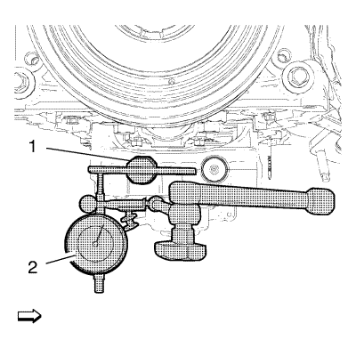

Limpieza e inspección del compensador del cigüeñal
Herramientas especiales
EN-50431 BSM - Adaptador de medición de contragolpes
Si desea informarse sobre herramientas regionales equivalentes, consultar Herramientas especiales .
Advertencia: Consulte Advertencia sobre el uso de gafas de seguridad y aire comprimido en la sección Prólogo.
- Retire el recubrimiento que quede sobre el engranaje del módulo del eje compensador con aire comprimido.
- Compruebe si el compensador está dañado.
Nota: El adaptador EN-50431 debe estar en posición horizontal con respecto al compensador.
- Monte el adaptador EN-50431 (1) en el compensador.
- Monte el comparador (2) a la distancia "a" de 38,217 mm (1,505 pulg.) del centro del eje compensador.

- Mueva el engranaje del módulo del eje compensador con los dedos y mida la holgura.
- Compare los resultados de la medición con las especificaciones mecánicas del motor. Consultar Especificaciones mecánicas del motor .
- Si el módulo del eje compensador no se encuentra dentro de los valores especificados, vuelva a realizar el procedimiento (1~6).
- Si la holgura del engranaje del módulo del eje compensador vuelve a estar fuera de los valores especificados de la siguiente tabla, sustituya el módulo del eje compensador por uno NUEVO.
| © Copyright Chevrolet. All rights reserved |